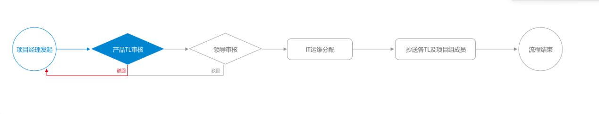
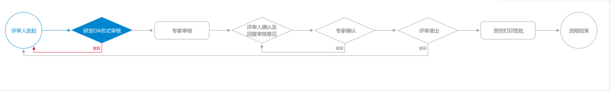

起源
这是上一个项目了，公司内部的OA系统，页面近30个了，由我这个前端和一个java大神完成。总体时间也近两个月，接口的调试时间也占了很多，因为数据逻辑的耦合度太高了。
下面谈谈一其中的个小需求吧！看图！

就是这种审批流程图，看起来比一般的线流程图多了一点样式。因为项目的模块不少，每个模块都有不同的审批流程，像这样

解剖一下
每个模块多个流程都需要看到这个流程走向，图像的上面是一个显示详细审批的信息列表。因为每个模块的流程图都不同，所有只能每个模块封装一个独有的组件来分别显示。 数据直接父组件传给子组件。
思考
看到这样的设计图，直接简单粗暴的分析下。
流程的显示有三种，分别是未开始、已处理和下一步处理，另外还有个驳回箭头。
1.一般来讲，我们首先想到的会是用canvas来控制几种样式的逻辑
2.另外还可以用JS+CSS来控制。
动手
嗯，canvas貌似也不错，在花了一个多小时画完这个图后，瞅瞅代码，这什么鬼。代码上百行，还没加逻辑判断，连自己看不下去了。再试试下个方案吧。
vue,可以类似JSP页面，HTML可以嵌套JS。那么逻辑控制显示就没问题了。那就得先把图画好了，圆和条子很简单，箭头也直接border画个三角形就OK了，不正规的菱形？两个三角形对立就OK了。
border-top: 5px solid transparent;
border-bottom: 5px solid transparent;
border-left: 5px solid #878787;
对的，就是这样。
逻辑和数据处理
UI界面的图就这样完美出来了，是不难吧。嗯，只是开始。后台给我的接口只有一个数据seq来控制整个流程。对的，只有一个seq！！！ 我这边需要控制每个步骤图的三种不同的显示和驳回箭头的显示。
嗯，不难，真的。只是多了点判断，像这样。
if(res.data.data.length > 1 && index == res.data.data.length-1){
if(arr[index].seq < arr[index-1].seq){
if(arr[index-1].seq == 2){
that.ctrl = {"step":Number(item.seq)-1,"stop":1}
}else if(arr[index-1].seq == 5){
that.ctrl = {"step":Number(item.seq)-1,"stop":2}
}else if(arr[index-1].seq == 6){
that.ctrl = {"step":Number(item.seq)-1,"stop":3}
}else{
that.ctrl = {"step":8,"stop":0}
}
}else{
that.ctrl = {"step":Number(item.seq),"stop":0}
}
}else{
that.ctrl = {"step":1,"stop":0}
}
最终直接把ctrl传给子组件，参数是step和驳回的stop。那么接下来就是子组件控制流程的样式了，对的，这个也不难。
先取到数据
watch:{
ctrl:function(newval,oldval){
if(newval != oldval){
this.getData()
}
}
},
props:{
ctrl:{
type:Object,
default:function(){
return {};
}
}
}
因为一个模块内的每个流程都需要这个显示，所有需要watch一下保证数据完美的显示。
问题来了
数据有了，基本页面也完美展示了，那通过数据该咋渲染呢？
嗯，这个也不难。用来控制Class来控制就好，像这样
:class="step_t?'ctrl-step-rebut':''"
是的这样可以控制两种，那这里有三种咋控制呢？这样？
:class="stepTwo?'ctrl-first-right-writhe':(stepOne?'ctrl-first-right-son':'')"
对的，就是这样，理论上三元表达式可以无限叠，但一般不会这样，万一其他人来维护这个项目呢，那不直接带刀找你了，所有两层就可以了，多层用if elseif来判断。
这样就可以完美的控制三种显示了。step 和 stop 也需要处理
switch (this.ctrl.step)
{
case 1:
...
break;
case 2:
...
break;
case 3:
...
break;
}
switch (this.ctrl.stop){...}
就这样，直接判断出流程走到哪一步，直接再通过显示哪里class来显示对应的样式就可以了。
总结
1.相比canvas来讲，用JS+css来解决这样流图更好，代码没那么复杂，能一看就懂，样式和一些逻辑也可以复用，清晰易懂。
2.业务都不难，难的是对底层代码的理解和自己实现业务逻辑的方法。每次碰到带点逻辑的业务还是需要仔细分析，保证自己能做到自己能做到的极限。
3.vue用起来还是很爽的，下一篇博客也来讲讲自己对vue的理解吧。